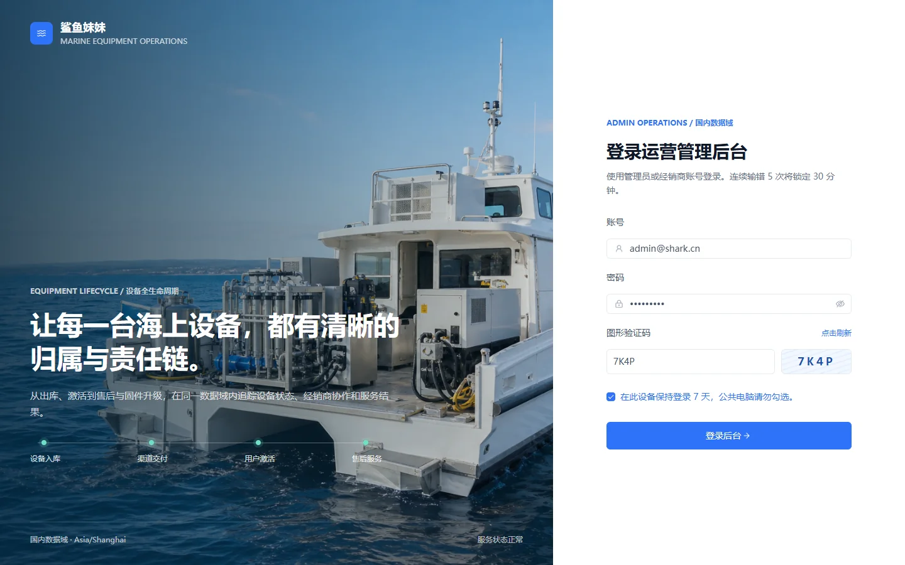
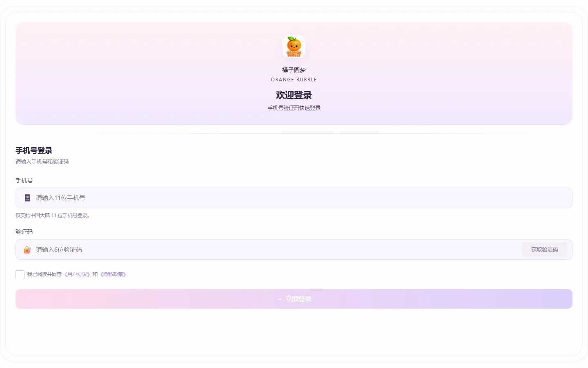
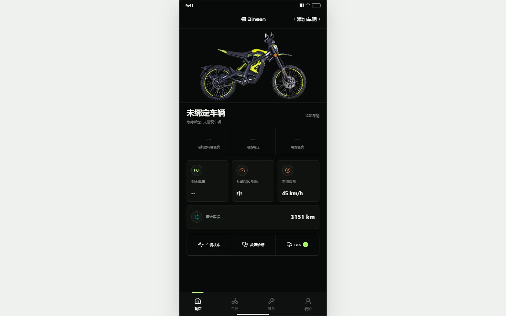

All Work
全部作品
从设备运营后台到移动端用户产品。这里保留全部 7 个可访问项目，精选项目另有完整案例拆解。

01管理平台IoT后台
鲨鱼妹妹设备运营管理平台
重新组织设备、用户、运营和售后流程，为多角色提供统一工作台。
我的工作 业务调研、信息架构、原型与 PRD、状态和权限规则。
 02
02AppIoT设备服务
鲨鱼妹妹 App
连接用户、智能设备与售后服务，集中呈现状态、任务、报修和进度。
我的工作 用户旅程、设备流程、服务链路和移动端交互。
 03
03专业设备App作业场景
光纤互联 App
面向便携式光纤检测设备，覆盖连接、授权、测试记录和服务流程。
我的工作 设备状态、移动端方案、固件升级和售后链路。

04用户产品移动端
心情设计 App
围绕情绪记录与轻社交，组织内容消费、表达和互动路径。
我的工作 产品定位、核心用户路径、信息层级与移动交互。
体验项目 
05专业设备移动端
BINSEN RAVEN V7 App
面向专业户外设备的控制与状态反馈，在效率和可靠性之间做取舍。
我的工作 设备控制路径、状态反馈、异常提示与高频操作。
体验项目  06
06管理平台智能硬件
智能骑行设备管理系统
统一管理设备台账、用户、运行数据和售后问题。
我的工作 后台架构、设备状态、运营数据与售后流程。
体验项目  07
07智能硬件App用户产品
蓝图骑行
把设备、路线、过程数据与结果回顾组织成一次连续骑行体验。
我的工作 产品结构、核心路径、设备与数据呈现、移动端交互。